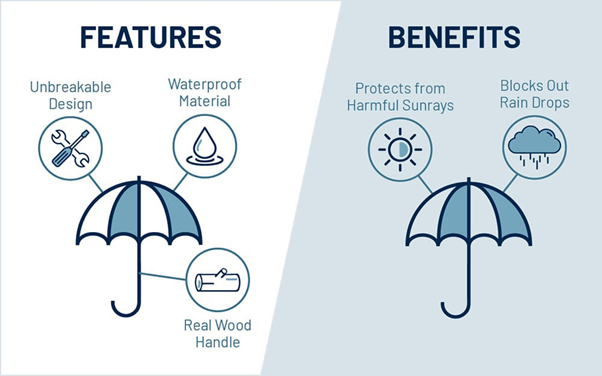

Facebook is the most popular social media platform, and you can easily leverage it to reach more potential customers and boost sales. But there are certain things that may slow down your progress or completely sabotage your ads campaign.
In this article, we’ll look at 8 reasons why your Facebook ads aren’t delivering the results you want.
We’ll also go through the practical advice to fix all of them to get you the desired results.
#1 You Target the Wrong Audience
The most common reason why your Facebook ads don’t work as expected is targeting the wrong audience. If you target the wrong audience, your ads will become irrelevant, and nobody will click on them.
That’s why it’s so important to make everything as personalized as possible.
Personalization is critical to the success of your ads. No wonder Facebook gives you that many options for targeting and specifying your audience.
You should also set a goal of what you’re trying to achieve – do you want to increase awareness or close more deals?
You can easily do that by focusing on the specific sales funnel stages.
While in the Awareness stage, you’re mainly introducing your brand to the leads. You’re doing all of the selling in the Decision stage instead.
Make sure you’re aware of what sales funnel stage your customers are at.
Tailor your Facebook ads to them, make everything as relevant as possible, and drive stranger results faster.
#2 Your Ad’s Quality is Low
The quality of your ad is critical if you’re looking to launch a successful Facebook ad campaign. That’s why you should pay close attention to the grammar, type of content, and tone of voice.
Crafting nicely written ads that are grammatically correct is especially important. This is because just one small grammar error can cost you 50% in sales.
You should also figure out a way to stand among other posts and ads in the feed. An easy way to do that is to use videos and images to get more attention with your ads.
You can easily set different types of Facebook ads in the Ads Manager.
Just make sure you use the right tools to maximize its effectiveness and convey the right message (here are my best picks for that.)
Lastly, you can’t forget to include a CTA. It’s the key thing that leads to the most sales. If you don’t show your customers where to buy, how do you expect to make sales?
You should also make it more relevant instead of leaving it to just “Click here.”
Perfecting the quality and making everything spot on will go a long way. It will help you maximize your ad’s potential and supercharge your sales.
#3 Your Bid Is Too Low
When you launch a Facebook ads campaign, you’re competing with thousands of similar brands trying to get to the same audience.
And that’s why Facebook needs to decide which ads will show and which will not.
This ad’s ranking is based on not only price, though. The most important Facebook ads ranking factors include:
- Bid Price – how much money you pay for your ads
- Action Rates – how many actions users took from your ads. This is sometimes only an estimation.
- Quality & relevance – how relevant and high-quality your ad is. The more, the better.
You don’t always need to bid the highest price to get on top. That’s why I strongly advise you to perfect the quality, make your ads relevant, and include a strong CTA in the previous section.
That way, you spend less, earn more, and have a more successful ad campaign.
But because the price is very important, you need to figure out how much you should pay Facebook for each action. You have two options you can set in terms of pricing.
If you’re just a beginner, I recommend you choose the Lowest Cost option.
That allows you to let Facebook determine the lowest price you need to pay to show up in the Facebook feed.
On the opposite spectrum, you have the Bid Cap option.
The Bid Cap option allows you to choose prices according to your needs. It’s the price that you’re willing to pay, and you have complete control of it.
But this is risky because if you set an extremely low price, you risk not showing up.
So be aware of that and don’t always try to spend as little as possible. Understand that if you spend a bit more, you can get more money in return than if you spent a lot less.
#4 You Set Far Too Big Goals
Setting unrealistic goals and expecting too much from yourself isn’t something rare. In fact, it’s natural that you strive to achieve the best results.
But you must make sure they are within your reach and not impossible to accomplish.
Setting goals that are out of your reach will only frustrate you and make you wonder what the heck is wrong with your ad campaign. Fixing it isn’t as straightforward as possible, though…
The easiest way to fix it is to hire an expert or an industry leader to look at your ad campaign and set realistic goals for you.
The more experience they have, the higher the chances of actually accomplishing the goals.
I highly advise you to do so for your ad campaign, especially if you’re just starting and have no prior experience on the subject. It will simplify your life, take away all of the headaches, and help you set more realistic goals that you can accomplish.
#5 Your Account Spending Limit Has Been Reached
When you work with Facebook Ads, each ad group and campaign has a spending limit that you can put in place.
This limit is here to help you assign a specific amount of resources to the individual ads.
You usually set this limit in the beginning when you’re creating an ad campaign. And if you’re like most people, you forget about it after a while because you have tons of other tasks to take care of.
Unfortunately, that means that if you go over this limit, your ads won’t show up.
Fortunately, fixing it is super easy. You just need to go to the settings of your ad campaign and set a higher spending limit. It’s always a great idea to double-check it. It’s a super-simple thing that can be easily overlooked and cause trouble.
Make sure to check your spending limit, set the right amounts, and deliver your ads.
#6 Your Landing Page Isn’t Optimized
Clicking on the Facebook ad is only the beginning of a sales cycle. If you wish to make a sale, you’ll need more than just clicks.
The rest happens on your landing page – the page where you sell your products.
It’s critical that you set clear goals for your landing page, optimize it for your customers, and do everything in your power to maximize its conversion rate.
The average conversion rate for a landing page is 2.35%.
If your conversion rate is lower, you should start paying closer attention to your landing page. Maybe you don’t convey a strong benefit, need to add more social proof, or just should use a different hook.
Whatever it is, make sure you fix it to reach the full potential of your landing page.
Fortunately, nowadays it’s easier than ever with tools like ClickFunnels. You can do everything effortlessly with a drag-and-drop editor and build a solid landing page in a matter of a few hours. Check some of the best tools and ClickFunnels alternatives here.
Be sure to perfect your landing page, maximize your conversion rate, and get more sales.
#7 Don’t Convey a Strong Benefit
Your customers don’t care about your product and its features. The only thing they care about is themselves and how the product can help them.
That’s precisely the difference between benefits and features.
While features tell your customers all about the product, benefits tell them how they can profit from buying it and why they should do so.

If you’re looking to run a successful Facebook ad campaign, you must make all of your ads benefit-driven.
It’s the only way to convey the right message, persuade your customers, and make sales.
#8 You Violate Rules & Don’t Follow the Guidelines
Violating rules and not following the social media platforms standards can be an easy way to shut down your ad campaign (or even your page.)
Facebook is very strict and has a lot of policies you must follow.
There are restricted topics like alcohol and dating, targeting options must not discriminate any race or gender, and so much more.
You can see the full list of all ad-related guidelines and policies here.
But there is a lot more than meets the eye. There are also specific community best practices and a lot of other things to keep in mind.
These things are also super-dynamic and keep changing all the time.
If you’re a beginner, I recommend you enroll in an online course and learn more about the rules, policies, and standards to follow. It will help you make sure you don’t violate any regulations and keep your ads up and going (here are the best online course platforms.)
Never stop learning about the policies; prevent shutting down your campaign and drive better results.
#9 BONUS TIP: Track Your Success
Measuring all-important KPIs and staying on top of things is critical to spot errors early on and prevent them as soon as possible.
You don’t need any fancy analytics tool for that. In fact, everything you need is to go to your Facebook Ad account’s dashboard, and you get all the insights there.
You can see your budget, impressions, clicks, engagement, and all other vital metrics.
Make sure to monitor them carefully and take note of any inconsistencies. That way, you can catch any flaws and errors early on and prevent major problems.
Conclusion
Facebook ads can be a great way to increase brand awareness, boost sales, and get more customers. However, you may encounter a couple of problems along the way that can slow down your progress.
In this article, we’ve talked about the 8 most common Facebook ad problems.
We’ve gone over each of them in detail and looked at the solution so you can fix them and supercharge your strategy. Follow the advice above, create a bullet-proof ad campaign, drive stronger results, and build your path to financial freedom.
About the Author
Neal Taparia is the co-founder of Imagine Easy Solutions, a portfolio of online educational services that reached over 30 million students yearly. Neal sold the business to Chegg (NYSE: CHGG), where he stayed there as an executive for three years.
He is now pursuing a new initiative, Solitaired, which ties classical games with memory and attention training.
Leave a Reply